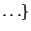
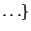

Next: G
Up: F
Previous: Fitness-proportionate selection
Function set
set of elementary functions, appropriate to the problem,
that are available as inner nodes in a GP representation. Together with the
terminal set
they are used to build a tree-shaped individual.
Examples of function set members
are arithmetic operators and mathematical functions
+,  , , /, sin, cos for symbolic regression and elements
of a programming language
if-then-else, for, do-until,  for building
programs.
, , /, sin, cos for symbolic regression and elements
of a programming language
if-then-else, for, do-until,  for building
programs.
Hans-Georg Beyer
2002-02-25